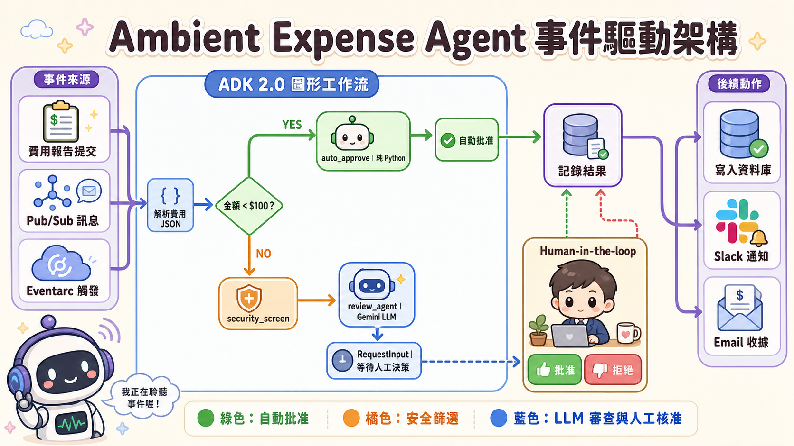

不是每一筆工作，都應該先問 AI
企業導入代理程式時最常見的誤區，是把整個流程都交給 LLM：金額判斷交給它、敏感資料辨識交給它、最後是否核准也交給它。這看似「更智慧」，實際上卻把原本清楚、可測試的規則，換成機率性的黑箱決策。
這個 Codelab 真正示範的不是如何做一個費用審批聊天機器人，而是如何建立一條只在需要語意判斷時才使用模型的事件驅動工作流。低於 $100 的費用由 Python 規則直接批准；高額費用先經安全篩選，再讓 Gemini 分析風險，最後由人類做不可逆的核准決策。

從 Chat Agent 到 Ambient Agent，改變的是責任邊界
聊天式代理程式由使用者發起請求，錯誤通常會在畫面上立即被看見。Ambient Agent 則由 Pub/Sub、Eventarc 或其他系統事件自動啟動，可能在沒有人盯著螢幕時持續處理工作。它因此需要更嚴格的輸入驗證、工作階段隔離、可觀測性與人工升級機制。
確定性規則$100 閾值、路由與 PII 遮蔽應由可重現、可單元測試的程式碼執行。
機率性判斷只有費用描述的風險、合理性與語意訊號需要交給 LLM。
高風險決策高額費用與安全事件必須透過 RequestInput 暫停並等待人類核准。
核心工程原則：先問「這一步需要推理嗎？」
如果答案是否定的，就不應消耗模型成本，也不應承擔模型變異。好的代理程式架構不是讓 LLM 做最多事情，而是把 LLM 放在它最有價值、且失敗範圍可控制的位置。